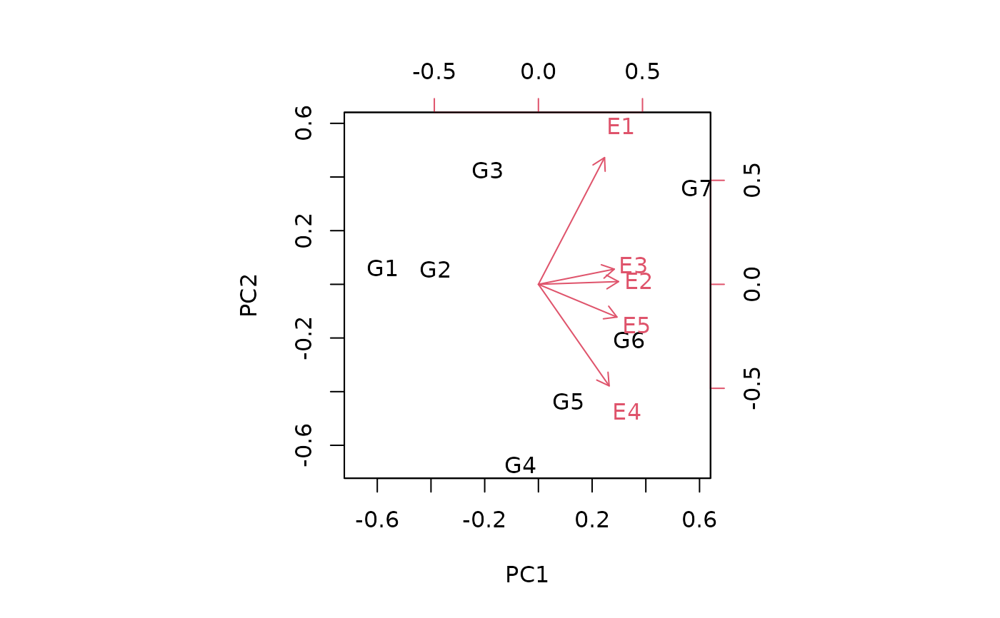

Principal component analysis by NIPALS, non-linear iterative partial least squares
Source:R/nipals.R
nipals.RdUsed for finding principal components of a numeric matrix x. Missing values in the matrix are allowed. Principal Components are extracted one a time. This algorithm computes x = TLP', where T is the scores matrix, L (Lambda) is the eigenvalue vector, and P is the loadings matrix.
Arguments
- x
Numerical matrix for which to find principal compontents. Missing values are allowed.
- ncomp
Maximum number of principal components to extract from x.
- center
If TRUE, subtract the mean from each column of x before PCA.
- scale
if TRUE, divide the standard deviation from each column of x before PCA.
- maxiter
Maximum number of NIPALS iterations for each principal component.
- tol
Default 1e-6 tolerance for testing convergence of the NIPALS iterations for each principal component.
- startcol
Determine the starting column of x for the iterations of each principal component. If 0, use the column of x that has maximum absolute sum. If a number, use that column of x. If a function, apply the function to each column of x and choose the column with the maximum value of the function.
- fitted
Default FALSE. If TRUE, return the fitted (reconstructed) value of x.
- force.na
Default FALSE. If TRUE, force the function to use the method for missing values, even if there are no missing values in x.
- gramschmidt
Default TRUE. If TRUE, perform Gram-Schmidt orthogonalization at each iteration.
- verbose
Default FALSE. Use TRUE or 1 to show some diagnostics.
Details
CAUTION: Different R package functions do different things with the L matrix. For example, some functions include L in T.
The R2 values that are reported are marginal, not cumulative.
References
Wold, H. (1966) Estimation of principal components and related models by iterative least squares. In Multivariate Analysis (Ed., P.R. Krishnaiah), Academic Press, NY, 391-420.
Andrecut, Mircea (2009). Parallel GPU implementation of iterative PCA algorithms. Journal of Computational Biology, 16, 1593-1599.
Examples
B <- matrix(c(50, 67, 90, 98, 120,
55, 71, 93, 102, 129,
65, 76, 95, 105, 134,
50, 80, 102, 130, 138,
60, 82, 97, 135, 151,
65, 89, 106, 137, 153,
75, 95, 117, 133, 155), ncol=5, byrow=TRUE)
rownames(B) <- c("G1","G2","G3","G4","G5","G6","G7")
colnames(B) <- c("E1","E2","E3","E4","E5")
dim(B) # 7 x 5
#> [1] 7 5
p1 <- nipals(B)
dim(p1$scores) # 7 x 5
#> [1] 7 5
dim(p1$loadings) # 5 x 5
#> [1] 5 5
B2 = B
B2[1,1] = B2[2,2] = NA
p2 = nipals(B2, fitted=TRUE)
# Two ways to make a biplot
# method 1
biplot(p2$scores, p2$loadings)

# method 2
class(p2) <- "princomp"
p2$sdev <- sqrt(p2$eig)
biplot(p2, scale=0)